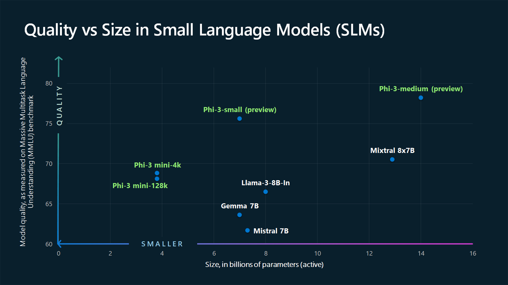

때로는 복잡한 문제를 해결하는 가장 좋은 방법은 동화책에서 힌트를 얻는 것이다. 이는 마이크로소프트 연구원들이 더 작은 패키지에 더 강력한 성능을 담는 방법을 고안하면서 얻은 교훈이다.
 때로는 복잡한 문제를 해결하는 가장 좋은 방법은 동화책에서 힌트를 얻는 것이다. 이는 마이크로소프트 연구원들이 더 작은 패키지에 더 강력한 성능을 담는 방법을 고안하면서 얻은 교훈이다.
작년, 기계 학습의 수수께끼에 대한 잠재적 해결책을 하루 종일 고민한 후, 마이크로소프트의 로넨 엘단은 딸에게 자장가를 읽어주면서 "그녀가 이 단어를 어떻게 배웠지? 이 단어들을 어떻게 연결하는 걸까?"라고 자문했다.
이는 마이크로소프트 리서치의 기계 학습 전문가로 하여금 AI 모델이 4세 아동이 이해할 수 있는 단어만을 사용해서 얼마나 많이 배울 수 있을지 궁금증을 갖게 했고, 궁극적으로 더 많은 사람들이 AI를 더 쉽게 접근할 수 있도록 하는 새로운 유형의 더 유능한 소형 언어 모델을 만들어내는 혁신적인 학습 접근법으로 이어졌다.
대형 언어 모델(LLMs)은 AI를 사용하여 더 생산적이고 창의적일 수 있는 흥미로운 새로운 기회를 창출했다. 하지만 그 크기로 인해 작동에 상당한 컴퓨팅 자원이 필요할 수 있다.
마이크로소프트는 이러한 모델이 여전히 많은 유형의 복잡한 작업을 해결하는 데 있어 최고의 기준이 될 것이라는 점을 인정하면서도, LLMs에서 발견되는 많은 동일한 기능을 제공하지만 크기가 작고 더 적은 양의 데이터로 학습되는 일련의 소형 언어 모델(SLMs)을 개발해 왔다.
마이크로소프트는 오늘 마이크로소프트 연구원들이 개발한 학습 혁신 덕분에 언어, 코딩 및 수학 능력을 평가하는 다양한 벤치마크에서 동일 크기 및 그 다음 크기의 모델을 능가하는 가장 유능하고 비용 효율적인 소형 언어 모델인 Phi-3 제품군의 공개 모델을 발표했다.
마이크로소프트는 이제 그 크기가 두 배인 모델보다 성능이 우수한 38억 개의 매개변수를 측정하는 Phi-3-mini를 더 강력한 소형 언어 모델 제품군 중 첫 번째로 공개한다고 밝혔다.
오늘부터 Phi-3-mini는 마이크로소프트 Azure AI 모델 카탈로그와 기계 학습 모델 플랫폼인 Hugging Face, 그리고 로컬 머신에서 모델을 실행하기 위한 경량 프레임워크인 Ollama에서 사용할 수 있다. 또한 어디서나 배포할 수 있는 표준 API 인터페이스를 갖춘 NVIDIA NIM 마이크로서비스로도 제공될 예정이다.
마이크로소프트는 또한 품질과 비용 면에서 더 많은 선택권을 제공하기 위해 Phi-3 제품군에 추가 모델이 곧 출시될 것이라고 발표했다. Phi-3-small (70억 개의 매개변수)과 Phi-3-medium (140억 개의 매개변수)은 Azure AI 모델 카탈로그 및 기타 모델 가든에서 곧 사용할 수 있게 될 것이다.
소형 언어 모델은 더 단순한 작업에서 잘 수행되도록 설계되었으며, 제한된 리소스를 가진 조직에서 보다 접근하기 쉽고 사용하기 쉬우며, 특정 요구 사항에 맞게 미세 조정하기가 더 용이하다.
마이크로소프트의 생성형 AI 담당 수석 제품 관리자인 소날리 야다브는 "우리가 앞으로 보게 될 것은 대형에서 소형으로의 전환이 아니라, 단일 범주의 모델에서 고객이 자신의 시나리오에 가장 적합한 모델을 결정할 수 있는 능력을 갖춘 모델 포트폴리오로의 전환"이라고 말했다.
마이크로소프트의 AI 부사장인 루이스 바르가스는 "일부 고객은 소형 모델만 필요로 할 수 있고, 일부는 대형 모델이 필요할 것이며, 많은 고객들이 다양한 방식으로 둘을 결합하기를 원할 것"이라고 말했다.
적합한 언어 모델을 선택하는 것은 조직의 특정 요구 사항, 작업의 복잡성, 가용 자원에 달려 있다. 소형 언어 모델은 클라우드가 아닌 기기에서 로컬로 실행할 수 있는 애플리케이션을 구축하고자 하는 조직과 광범위한 추론이 필요하지 않거나 빠른 응답이 필요한 작업에 적합하다.
소형 언어 모델은 또한 고품질의 결과가 필요하지만 자체 사내에서 데이터를 보관하고자 하는 상황에 직면하는 규제 대상 산업 및 분야에 대한 잠재적 솔루션을 제공한다고 야다브는 말했다.
바르가스와 야다브는 클라우드에 연결되지 않은 "에지"에서 작동하는 스마트폰 및 기타 모바일 기기에 더 유능한 SLM을 배치할 수 있는 기회에 특히 흥분하고 있다. (자동차 컴퓨터, Wi-Fi가 없는 PC, 교통 시스템, 공장 현장의 스마트 센서, 원격 카메라 또는 환경 규정 준수를 모니터링하는 장치를 생각해보라.) 데이터를 기기 내에 보관함으로써 사용자는 "지연 시간을 최소화하고 개인 정보 보호를 극대화할 수 있다"고 바르가스는 말했다.
지연 시간은 LLM이 사용자 프롬프트에 대한 답변을 생성하는 데 사용되는 정보를 검색하기 위해 클라우드와 통신할 때 발생할 수 있는 지연을 의미한다. 경우에 따라 고품질의 답변을 기다릴 가치가 있지만, 다른 시나리오에서는 속도가 사용자 만족도에 더 중요하다.
SLM은 오프라인에서 작동할 수 있기 때문에 더 많은 사람들이 이전에는 불가능했던 방식으로 AI를 활용할 수 있게 될 것이라고 바르가스는 말했다.
예를 들어, SLM은 셀룰러 서비스가 부족한 시골 지역에서 사용될 수 있다. 작물을 검사하는 농부가 잎이나 가지에서 병의 징후를 발견한 경우를 생각해 보자. 시각적 기능을 갖춘 SLM을 사용하여 농부는 문제의 작물 사진을 찍고 해충이나 질병을 치료하는 방법에 대한 즉각적인 권장 사항을 받을 수 있다.
바르가스는 "좋은 네트워크가 없는 세계의 일부 지역에 있다면, 여전히 기기에서 AI 경험을 할 수 있을 것"이라고 말했다.
고품질 데이터의 역할
이름에서 알 수 있듯이 SLM은 LLM에 비해 매우 작다. 적어도 AI 기준으로는 그렇다. Phi-3-mini는 모델의 출력을 결정하는 데 도움이 되는 알고리즘 노브를 의미하는 측정 단위인 38억 개의 매개변수 "만" 가지고 있다. 반면에 가장 큰 대형 언어 모델은 그 크기가 훨씬 더 크다.
대형 언어 모델에 의해 이뤄진 생성형 AI의 엄청난 발전은 주로 그 절대적인 크기에 의해 가능해진 것으로 여겨져 왔다. 그러나 마이크로소프트 팀은 작은 패키지에서 엄청난 결과를 제공할 수 있는 소형 언어 모델을 개발할 수 있었다. 이 돌파구는 학습 데이터에 대한 매우 선별적인 접근 방식을 통해 가능했으며, 이는 동화책이 작용하는 부분이다.
지금까지 대형 언어 모델을 학습시키는 표준적인 방법은 인터넷에서 대량의 데이터를 사용하는 것이었다. 이는 언어의 뉘앙스를 이해하고 사용자 프롬프트에 대한 지능적인 답변을 생성하는 데 필요한 콘텐츠에 대한 이러한 유형의 모델의 거대한 식욕을 충족시키는 유일한 방법으로 여겨졌다. 그러나 마이크로소프트 연구원들은 다른 아이디어를 가지고 있었다.
마이크로소프트의 생성형 AI 연구 부사장이자 더 유능한 소형 언어 모델 개발을 주도해 온 세바스티앙 뷔벡은 "단순히 원시 웹 데이터에 대해 학습하는 대신, 극도로 높은 품질의 데이터를 찾아보는 것은 어떨까요?"라고 물었다. 그러나 어디에 초점을 맞출 것인가?
엘단의 딸과의 밤마다 읽기 의식에서 영감을 받은 마이크로소프트 연구원들은 명사, 동사, 형용사를 대략 동일한 수로 포함하여 3,000개의 단어로 시작하는 개별 데이터 세트를 만들기로 결정했다. 그런 다음 대형 언어 모델에 목록에서 하나의 명사, 하나의 동사, 하나의 형용사를 사용하여 어린이 이야기를 만들도록 요청했는데, 이는 며칠에 걸쳐 수백만 번 반복되어 수백만 개의 작은 어린이 이야기를 생성했다.
SLM은 … 작업을 완료하기 위해 클라우드로 이동할 필요가 없는 계산에 고유하게 위치합니다.
연구원들은 결과로 생성된 데이터 세트를 "TinyStories"라고 명명하고 이를 사용하여 약 1,000만 개의 매개변수를 가진 매우 작은 언어 모델을 학습시켰다. 놀랍게도 자체 이야기를 만들라는 요청을 받았을 때, TinyStories로 학습된 소형 언어 모델은 완벽한 문법으로 유창한 내러티브를 생성했다.
그 다음, 그들은 실험을 한 단계 더 높였다. 이번에는 더 큰 규모의 연구원 그룹이 교육적 가치와 콘텐츠 품질을 기준으로 필터링된 신중하게 선택된 공개 데이터를 사용하여 Phi-1을 학습시켰다. 공개적으로 사용 가능한 정보를 초기 데이터 세트로 수집한 후, TinyStories에 사용된 것과 유사한 프롬프팅 및 시딩 공식을 사용했지만 한 단계 더 나아가 더 정교하게 만들어 더 넓은 범위의 데이터를 포착할 수 있도록 했다.
높은 품질을 보장하기 위해 결과 콘텐츠를 반복적으로 필터링한 후 추가 합성을 위해 LLM에 다시 공급했다. 이러한 방식으로 몇 주에 걸쳐 더 유능한 SLM을 학습시키기에 충분히 큰 데이터 코퍼스를 구축했다.
연구원들은 이 데이터 세트를 "CodeTextbook"이라고 명명했다.
연구원들은 어려운 개념을 학생에게 분해하는 교사처럼 데이터 선택에 접근함으로써 데이터 세트를 더욱 향상시켰다. 뷔벡은 "교과서와 같은 자료, 매우 잘 설명하는 양질의 문서를 읽기 때문에 언어 모델이 이 자료를 읽고 이해하는 작업을 훨씬 더 쉽게 만든다"고 말했다.
고품질 정보와 저품질 정보를 구별하는 것은 인간에게는 어렵지 않지만, 마이크로소프트 연구원들이 SLM을 학습시키는 데 필요하다고 결정한 1테라바이트 이상의 데이터를 살펴보는 것은 LLM의 도움 없이는 불가능할 것이다.
마이크로소프트 리서치 AI 프론티어 랩을 이끌고 새로운 학습 접근법이 개발된 곳의 부사장인 에제 카마르는 "현재 세대의 대형 언어 모델의 힘은 합성 데이터 생성 측면에서 우리가 이전에 가지지 못했던 실제 추진력"이라고 말했다.
신중하게 선택된 데이터로 시작하면 모델이 원치 않거나 부적절한 응답을 반환할 가능성을 줄일 수 있지만, 모든 잠재적 안전 문제를 방지하기에는 충분하지 않다. 모든 생성형 AI 모델 출시와 마찬가지로 마이크로소프트의 제품 및 책임감 있는 AI 팀은 Phi-3 모델 개발에서 위험을 관리하고 완화하기 위해 다층적 접근 방식을 사용했다.
예를 들어, 초기 학습 후 모델이 이상적으로 응답해야 하는 방법에 대한 추가 예제와 피드백을 제공했는데, 이는 추가적인 안전 계층을 구축하고 모델이 고품질 결과를 생성하는 데 도움이 된다. 각 모델은 또한 평가, 테스트 및 수동 레드팀을 거치는데, 이는 전문가가 잠재적 취약점을 식별하고 해결하는 과정이다.
마지막으로 Phi-3 모델 제품군을 사용하는 개발자는 또한 Azure AI에서 사용할 수 있는 도구 모음을 활용하여 더 안전하고 신뢰할 수 있는 애플리케이션을 구축하는 데 도움을 받을 수 있다.
적절한 작업에 적합한 크기의 언어 모델 선택하기
그러나 고품질 데이터로 학습된 소형 언어 모델에도 한계가 있다. 이들은 LLM이 더 큰 용량과 훨씬 더 큰 데이터 세트를 사용한 학습으로 인해 뛰어난 심층 지식 검색을 위해 설계되지 않았다.
LLM은 크기와 처리 능력으로 인해 방대한 양의 정보에 대한 복잡한 추론에서 SLM보다 우수하다. 이는 예를 들어 방대한 과학 논문을 살펴보고, 복잡한 패턴을 분석하며, 유전자, 단백질 또는 화학 물질 간의 상호 작용을 이해하는 데 도움을 줌으로써 신약 개발과 관련될 수 있는 기능이다.
바르가스는 "작업이 있고, 그 작업이 충분히 복잡해서 해당 작업을 여러 하위 작업으로, 때로는 하위-하위 작업으로 분할하는 방법을 알아내야 하고, 최종 답변을 제시하기 위해 이 모든 작업을 실행해야 하는 계획과 같은 것은 당분간 대형 모델의 영역에 있을 것"이라고 말했다.
고객과의 지속적인 대화를 바탕으로 바르가스와 야다브는 일부 기업이 작업이 너무 복잡하지 않은 경우 일부 작업을 소형 모델로 "오프로딩"하는 것을 볼 것으로 예상한다.
예를 들어, 기업은 Phi-3를 사용하여 긴 문서의 주요 내용을 요약하거나 시장 조사 보고서에서 관련 통찰력과 산업 동향을 추출할 수 있다. 다른 조직은 Phi-3를 사용하여 제품 설명이나 소셜 미디어 게시물과 같은 마케팅이나 영업 팀을 위한 콘텐츠 생성에 도움을 줄 수 있다. 또는 기업이 Phi-3를 사용하여 고객의 기본적인 요금제 관련 질문이나 서비스 업그레이드에 대해 답변하는 지원 챗봇에 동력을 공급할 수 있다.
내부적으로 마이크로소프트는 이미 대형 언어 모델이 라우터 역할을 하는 모델 제품군을 사용하고 있는데, 더 적은 컴퓨팅 성능을 요구하는 특정 쿼리를 소형 언어 모델로 전달하는 한편, 다른 더 복잡한 요청은 스스로 처리한다.
"여기서 주장은 SLM이 대형 언어 모델을 대체하거나 교체할 것이라는 게 아니다"라고 카마르는 말했다. 대신 SLM은 "에지에서의 계산, 기기에서의 계산, 작업을 완료하기 위해 클라우드로 이동할 필요가 없는 계산에 고유하게 위치한다. 그렇기 때문에 이 모델 포트폴리오의 장단점을 이해하는 것이 우리에게 중요하다"라고 설명했다.
그리고 크기는 중요한 장점을 지닌다. 소형 언어 모델과 클라우드의 대형 모델에서 얻을 수 있는 지능 수준 사이에는 여전히 차이가 있다고 뷔벡은 말했다. "그리고 아마도 항상 차이가 있을 것이다. 대형 모델도 계속 진전을 이룰 것이기 때문이다."
2024년04월25일 : MICROSOFT Tiny but mighty: The Phi-3 small language models with big potential
Go Back to AI NEWS Page